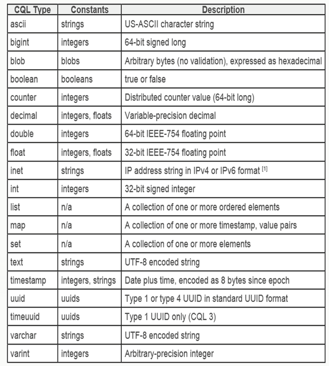

C* Primer
Part 01: Cassandra and Modeling Basics
SELECT * FROM presenters WHERE name IN ('Christopher Reedijk', 'Gary Stewart');
name | title | company | area | twitter
---------------------+--------------+---------+------+-----------
Christopher Reedijk | Dev Engineer | ING | NL | @creedijk
Gary Stewart | Dev Engineer | ING | NL | @Gaz_GandA

ING Nederland (@ingnl)
This presentation is based on a 101 presentation by
Hayato Shimizu (@hayato_shimizu)
Short introduction
| a little bit about us | ||||||
|

3 Challenges
challenge 1
Improve availability
without trading consistency
Consequences of not being available


source: nu.nl
Consequences of not being consistent

challenge 2
Aim to be easier scalable
Changes are happening at an increasing pace
Stop focusing on the
expected load

yesterday
source: bradfrostweb.com
Start focusing on the
unexpected load


| today | tomorrow |
| source: bradfrostweb.com | |
challenge 3
Adopt new ways of thinking
Become the top engineering company
ING's culture is changing fast.
Waterfall to Scrum to DevOps in less than 2 years
Aim to approach problems as green field to understand the essence
"Un-learn" principles that don't scale
Use cache correctly!
Reduce locking (transaction)
Apache Cassandra
Created by Avinash Lakshman and Prashant Malik at Facebook
| Cassandra is | Cassandra is not | |
|---|---|---|
|
|
DataStax and Cassandra

Founded in 2010 by Jonathan Ellis and Matt Pfeil
80% Apache Cassandra code contribution
Offer commercial support for DataStax Enterprise version of Cassandra
DataStax Enterprise integrates Search and Analytics
Head Quarter in San Francisco Bay area
EMEA office opened in March 2013
Native Protocol / DataStax Drivers
CQL3 Only
Fully asynchronous protocol, using Netty
Server notifications
Java, C#, Python, node.js and Ruby so far, more will be added
Many policies, including TokenAwarePolicy, DowngradeConsistencyRetryPolicy, etc...
Metrics (metrics.codahale.com) included
Maven:
com.datastax.cassandra
cassandra-driver-core
2.0.2
Cassandra Internals
Tuneable Consistency
Configureable Consistency Level (CL)
per read and write action
Writes
|
Reads
|
Logical Grouping
|
Keyspace: group of tables Table: group of data Replication Factor: |

|
Cassandra Replication Strategy
|
Token Range 0 -> 2127-1 in Ring Formation Consistent Hashing Algorithm Replica nodes in clockwise Gossip protocol between nodes |
 Replication Factor (RF) = 3
Replication Factor (RF) = 3
|
Network Topology Awareness

Replication Factor and Data Consistency In a Distributed System
CAP – Consistency, Availability, Partition Tolerance
Consistency is achieved with W + R > RF
Quorum = (Integer) RF / 2 + 1

Write Path

Read Path

CQL3
Why CQL3?
Excellent language for modeling data structures
Usability
Readability
Familiarity
Programming language agnostic
Apache Thrift, Hector, Astyanax days
Column col =
new Column(ByteBuffer.wrap("product".getBytes())));
col.setValue(ByteBuffer.wrap("phone".getBytes());
col.setTimestamp(System.currentTimeMillis());
ColumnOrSuperColumn c = new ColumnOrSuperColumn();
c.setColumn(col);
Mutation m = new Mutation();
m.setColumn_or_supercolumn(c);
List
|

|
CQL3
INSERT INTO products (product_id, product)
VALUES (“id12321”, “phone”);

Data Modelling
Objectives
Learn basic modelling techniques
Learn how to use Cassandra DDL (Data Definition Language)
Learn how to use Cassandra DML (Data Manipulation Language)
Keyspace
CREATE KEYSPACE "primer"
WITH REPLICATION = {'class' : 'NetworkTopologyStrategy',
'datacenter1' : 3
};
USE primer;
Primary Key
The Primary Key
- The key that uniquely identifies a row
- A primary key consists of:
- A (composite) partition key
- One or more clustering columns
e.g. PRIMARY KEY (partition key, cluster columns, ...) - The partition key determines on which node the partition resides
- Data is ordered in cluster column order within the partition
Simple Table
|
|
|
Simple Table - Question
What do you expect the output to be?
|
|
Composite Partition Key
Note the extra brackets in the primary key! |
|
|
Composite Partition Key - Question
|
Will the following query work?
|
Clustering Columns
|
|
|
(Clustering) Order By
|
Partition keys are not ordered! You can only order by a clustering column Data will ordered ASCending by default |
Clustering Columns - Question
|
Will the following query work?
|
Static Columns
Introduced in Cassandra 2.0
|
|
|
Updates versus Inserts
|
|
Inserts and Updates are almost always the same Updates will insert when row does not exist! Unique constraint error do not exist in Cassandra! |
Data Types
Collections
|
|
|
Batches
|
|
Use batches for atomicity not performance! Use asynchronous queries for performance! |
Time to Live (TTL)
|
|
Time to Live (TTL) - Question
|
What happens when I do the following?
|
|
Counters
CREATE TABLE party_counter (
id varchar,
num_accounts counter,
PRIMARY KEY (id)
);
UPDATE party_counter
SET num_accounts = num_accounts + 1
WHERE id = '11111'
Lightweight Transactions
Introduced in Cassandra 2.0
|
|
|
|
|
De-normalize
| Don't do this | Do this instead |
|---|---|
|
|
Time Series
|
|
|
|
|
|
Performance
considerations
The best queries are in a single partition.
i.e. WHERE partition key =Queries that span multiple partitions are s-l-o-w
i.e. WHERE partition key IN (Queries that span multiple cluster columns are fast
i.e. WHERE partition key ="Table scan" - slow! (Limited to 10,000 rows by default)
Use LIMIT keyword to choose fewer or more rowsCollections - Often more efficient to denormalise further especially for larger data sets
Also favour sets over listUse lightweight transactions only where necessary
Great for 1% of your applicationTracing
cqlsh:primer> tracing on;
select * from party_account where id ='11111' ;
...
activity | timestamp | source | source_elapsed
---------------------------------------------------------------+--------------+-----------+----------------
execute_cql3_query | 05:30:05,777 | 127.0.0.1 | 0
Parsing select * from party_account where id ='11111'; | 05:30:05,777 | 127.0.0.1 | 199
Preparing statement | 05:30:05,777 | 127.0.0.1 | 518
Sending message to /127.0.0.2 | 05:30:05,780 | 127.0.0.1 | 3113
...
Executing single-partition query on party_account | 05:30:05,799 | 127.0.0.2 | 17915
Enqueuing response to /127.0.0.1 | 05:30:05,799 | 127.0.0.3 | 16772
Acquiring sstable references | 05:30:05,799 | 127.0.0.2 | 17940
Merging memtable tombstones | 05:30:05,799 | 127.0.0.2 | 17982
Skipped 0/0 non-slice-. sstables, included 0 due to tombstones | 05:30:05,799 | 127.0.0.2 | 18038
Merging data from memtables and 0 sstables | 05:30:05,799 | 127.0.0.2 | 18052
Read 3 live and 0 tombstoned cells | 05:30:05,799 | 127.0.0.2 | 18132
...
Message received from /127.0.0.3 | 05:30:05,822 | 127.0.0.1 | 45282
Processing response from /127.0.0.3 | 05:30:05,822 | 127.0.0.1 | 45338
Request complete | 05:30:05,822 | 127.0.0.1 | 45694
Improve availability
Aim to be scalable
Adopt new ways of thinking
3 Facts
fact 1
Availability is easier
Masterless architecture
No outages in contrast to master-slave architecture
This does make C* chatty
Replication of data
Replication factor is configurable per keyspace
Increasing nodes does not mean higher availability
Increasing the replication factor does
fact 2
Performance is easier
Solve your reads with your writes
De-normalization is acceptable for solving reads
Know your partitions
Large partitions will hurt!

Linear scalable
Adding nodes will increase your throughput through sharding

source: Datastax
fact 3
Consistency is harder
Application developer has much more responsibility
Focus on the data model and the flow of data is key
noSQL versus SQL
CAP theorem
Consistency (all nodes see the same data at the same time)
Availability (a guarantee that every request receives a response about whether it was successful or failed)
Partition tolerance (the system continues to operate despite arbitrary message loss or failure of part of the system)
Transactions and queuing are anti-patterns
C* v2.0 reduces the complexity by using lightweight transactions (paxos)
Availability is easier | challenge 1: availability & consistency
Performance is easier | challenge 2 easier scalable
Consistency is harder | challenge * availability & consistency, easier scalable, new way of thinking
all challenges covered...
C*@ING
| project |
use case |
status |
|---|---|---|
| Betelgeuze | Cache of Customer Data (KRO) | September 2014 in PRD |
| OI: Financial Fit | SOR for soft data | September 2014 in PRD |
| RTPE | New payments engine for on-us payments | February 2015 in PRD |
| Faster Than Light | Cache of Customer Data (MDM) | PoC |
| Ideal, Sales Support, NGINX, ... |
Session Management | In DEV |
| Ideal | Order Management | Product Backlog |
| Credit Cards | Cache external data | Awaiting budget |
| Availability Dashboard | Time series | In DEV |
| Realtime Account Forecasting | Cache of SAM data | PoC |
3 Questions - Bonus
question 1
What risks do we have with
2 DC's and using Write/Read CL of LOCAL_QUORUM?

Split-brain
Who wins? Neither side knows the other side!
CAP theorem - choose wisely
Use QUORUM but risk availability
when there are issues with the WAN link
Arrange a third DC... €€€
Applications apply DC stickiness
whilst processing data which increases complexity
question 2
Does QUORUM read and QUORUM write guarantee consistency?
No - it gives strong consistency
NTP must be set-up correctly
Know your flow of data
Model as idem-potent-ly as possible

question 3
Will C* solve all your IT issues?
No - but it will help solve a lot of your problems
Performance and availability are tuneable based on needs and costs
Consistency is solved by design and knowing the flow of data
Going from SQL to noSQL is a paradigm shift
Skills are not readily available
Some issues are better solved by relational databases
Thank you
...graceful bowContact
christopher.reedijk@ing.nl
gary.stewart@ing.nl